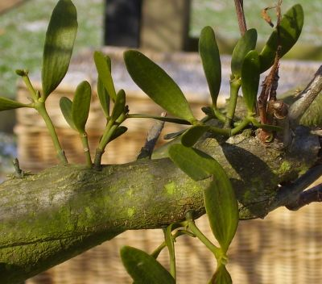
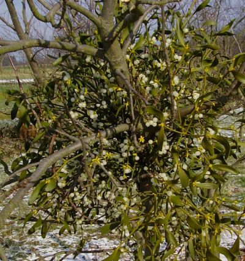
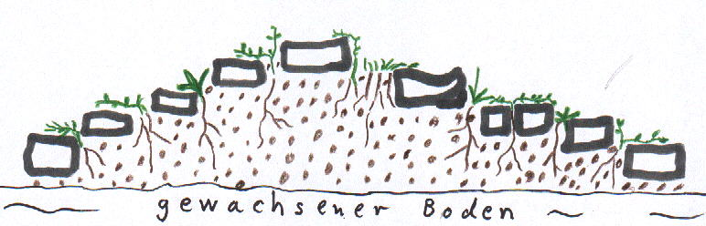
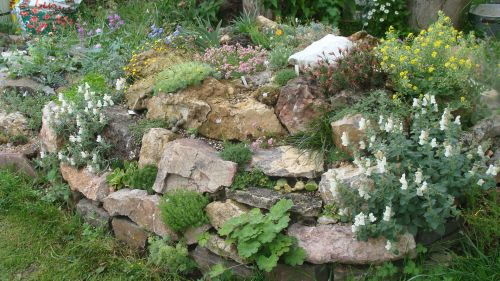

Canarina canarienis
von den Kanaren; kommt dort auf
Teneriffa, La Palma und Gomera in einer gelblich und orange bis dunkelrot blühenden
Form vor. Da die Pflanzen autosteril sind und ich nur je 1 Pflanze hatte, habe ich eine
gelbe und eine orangerote Form miteinander gekreuzt. Diese Sämlinge sind bei guter
Pflege in 1-2 Jahren blühfähig. Die Blütenfarbe ist von Pflanze zu Pflanze verschieden,
sie reicht von orange-gelb bis leuchtend rot. Dieses Rot erinnert an die Farbe der in
Kenia vorkommenden Canarina abyssinica. Farbe und Blütenform sind schöner als bei den
Eltern.
Im August
werden die kräftigen Wurzelstöcke in nahrhafte kalkfreie Erde gesetzt und feucht
gehalten.Der Container kann zunächst in den Garten gestellt werden, ab Oktober sollte
er aber ins Haus. Am besten ist ein Auspflanzen im Kalthaus. Bald erscheint der
Austrieb, der bis zu 4m hoch werden kann. Bei Temperaturen zwischen 5 und 20°C
erscheinen die Blüten von Dezember bis März. Danach wieder völlig tocken halten, zum
Beispiel in die Garage stellen, möglichst wenig umpflanzen.
Maurandya (Asarina) scandens
ist ein Geheimtip unter den
Kletterpflanzen für die Terrasse. Die dunkelblauen Trompetenblüten, die an kräftigen
Pflanzen bis zu 100 auf einmal erscheinen, sind äußerst attraktiv. Die Aussaat erfolgt
im Februar bei Zimmertemperatur. Wenn die Pflänzchen 3-4cm groß sind, wird pikiert, ab
Mitte Mai im Garten an warmem, sonnigen Platz unter kräftiger Düngung weiterkultiviert.
In der 2. Sommerhälfte erscheinen schon die Blüten. Nach kalter Überwinterung (Frost
wird nur ganz wenig vertragen) wird die Pflanze im 2. Jahr sehr kräftig und blüht schon
ab Sommerbeginn. Weitere interessante Pflanzen aus dieser Gattung sind Asarina
(neuerdings Lophospermum) erubescens und A. barclaiana
Rhodohypoxis baurii
stammt aus den Drakensbergen in
Südafrika und wächst dort in feuchten Wiesen und an Bachläufen. Der Boden ist
torfhaltig und sauer. Wegen ihrer Frostempfindlichkeit ziehe ich die Pflanzen in
Töpfen. Ab Mitte Mai werden diese Töpfe z.B. auf der sonnigen Terrasse aufgestellt. Im
Untersetzer sollte immer 2-3cm hoch Wasser stehen. Austrocknung ist tödlich! Man kann
sie auch in ein nicht zu trockenes Beet pflanzen, muß sie aber im Herbst wieder
herausnehmen. Bald nach den 10cm langen Blättern erscheinen die Blüten in weiß, rot und
zartrosa, bei der Hybride `Tetra Red´in leuchtendrot. Die Blüte hält etwa 4-6 Wochen
an. Ich beschicke im Frühjahr mehrere Töpfe im Abstand von jeweils 3 Wochen mit Knollen
(Rhizomen), dadurch habe ich von Ende Mai bis September immer blühende Pflanzen. Die
Töpfe bette ich am Teichufer in den Sand so ein, daß die Topfunterkante etwas unter dem
Wasserspiegel liegt. Ab September stelle ich die Töpfe in den Keller (völlig trocken).
Alle 2 Jahre wird umgepflanzt. Die Knollen vermehren sich gut. In besonders geschützten
Gegenden soll man die Knollen auch im Winter gut abgedeckt im Boden lassen können.
Inzwischen existieren über 50 Hybriden. Die Art R. milloides zeichnet sich durch lange
schmale Blätter und dunkelrote Blüten aus.
Erfahrungen mit Zistrosen
Zistrosen
stammen aus dem Mittelmeerraum und den angrenzenden Gebieten z.B. den Kanaren. Daraus
ergibt sich schon, daß es um die Winterhärte bei uns schlecht bestellt ist. Die meisten
Arten vertragen aber wenigstens ein paar Minusgrade, weshalb sie auch im wintermilden
England häufig angepflanzt werden. Anläßlich eines Mittelmeerurlaubes entsteht häufig
der Wunsch, diese Pflanzen im eigenen Garten zu besitzen, was zumindest im Westen
Deutschlands eingeschränkt möglich ist. Mein Garten befindet sich am Stadtrand von Bonn
(140m), das Klima ist hier schon merklich rauher als im Rheintal (40m).
Meine
Erfahrungen erstrecken sich auf die Arten Cistus incanus ssp. creticus, C. albidus,
C.ladanifer, C.laurifolius, C.monspeliensis, C. populifolius, C.salviifolius,
psilosepalus, C.symphytifolius und C. osbeckiaefolius, die ich alle aus Samen vom
Naturstandort gezogen habe, was nicht schwierig ist, da Samen in großer Menge gebildet
werden und die Anzucht leicht ist. Stecklingsvermehrung habe ich noch nicht versucht,
soll aber auch gehen.
Cistus incanus
ssp. creticus (rosa) übersteht die meisten Winter ohne jeden Schutz. Die Grenze dürfte
so bei -12° liegen. Alte Pflanzen tun sich schwerer, daher immer wieder neu aussäen.
Der Winter 2002/03 war mit Frost bis -9° zwar nicht allzu hart, aber die Frostperiode
war sehr lang, fast ohne Schnee, und es folgten einige weitere schwächere Frostperioden
mit Plusgraden dazwischen. Ohne Schutz durch Tannenzweige hat keine Pflanze überlebt.In
den folgenden Wintern haben alle Pflanzen mit leichten Schäden überlebt, im Januar 2009
gingen die Temperaturen bis -14° herunter, was schwere Schäden, aber keinen
Totalausfall verursachte, aber der Februar 2012 hat alle Pflanzen im Freiland erfrieren
lassen. Bilder finden Sie auf der Fotoseite Zistrosen.
Cistus
ladanifer habe ich aus den Bergen der Sierra de Gredos (Spanien) mitgebracht, nicht aus
der wärmeren Extremadura. Zu meiner Überrachung hat er im Januar 2002 mehrere Nächte
-8° ohne Schaden überstanden und sich inzwischen zu einem großen Busch entwickelt. Auch
weitere Pflanzen haben die folgenden 6 Winter ohne Schaden überlebt. Der Januar 2009
und auch 2010 brachte schwere Schäden, der Februar 2012 sorgte für einen Totalausfall.
In den meisten Gegenden Deutschlands würde ich ihn eher als Kübelpflanze ziehen. Wegen
der riesigen Blüten (weiß mit rotbraunen Flecken) lohnt sich der Aufwand. Inzwischen
habe ich auch Pflanzen aus der Sierra Nevada, die reinweiss ohne roten Fleck blühen.
Sie sind hier ebenfalls hart (es könnte sich um eine Hybride mit C. laurifolius
handeln).
Cistus
laurifolius ist die härteste Art, die wohl auch im Osten Deutschlands völlig winterhart
und auch sonst sehr robust ist. Auch im Februar 2012 kein Problem.
Cistus
monspeliensis verträgt kaum Frost. Kalthauspflanze. Ab dem Winter 2006/07 hat eine
vergessene Pflanze im Garten überlebt, sogar -14° im Januar 2009 brachte nicht alle
Zweige zum Absterben.
Cistus
populifolius teste ich erst seit 2007. Die letzten Winter wurden im Frühbeetkasten gut
überstanden. Eine Überwinterung im Freien wurde im Winter 2007/08 ohne Schaden
vertragen, im Januar 2009 aber ging es schief, 2012 ebenfalls, 2013 ging alles gut. Die
weißen Blüten wirken sehr edel.
Cistus
salviifolius habe ich aus den Bergen der Toscana und aus den Picos de Europa in
Nordspanien. Bei nicht zu nasser Überwinterung ist ein Versuch im Garten durchaus
angebracht, besonders bei nicht zu alten Pflanzen (s.o.). Temperaturen von -10° sind
kein Problem, im Winter 2002/03 sah es allerdings schlecht aus (s. oben), die Winter
danach brachten keine Probleme, der Januar 2009 hat etlichen Pflanzen das Leben
gekostet, der Februar 2012 allen, 2012/13 haben alle ohne Schaden überlebt. Die Form
aus der Toscana wächst aufrecht, während die aus Nordspanien mehr am Boden
kriecht.
Cistus albidus
sieht C. creticus sehr ähnlich, hat die letzten Winter auch gut aber mit leichten
Schäden an den Triebspitzen vertragen, den Februar 2012 nur unter Fichtenreisig,
2012/13 ohne jeden Schutz.
Cistus
psilosepalus hat relativ kleine weiße Blüten. Die Winterhärte schien zunächst
ausreichend zu sein, im Januar 2009 und 2010 gab es viele Ausfälle in schwerem
Lehmboden. Den Februar 2012 überstanden mehrere in ganz lockerem mit viel Split
durchsetzten Boden überraschend ohne Schaden! 2012/13 ging alles sehr gut, die Blüte im
folgenden Sommer war überaus üppig.
Cistus
symphytifolius von den Kanaren verträgt nur ganz wenig Frost. Die Überwinterung erfolgt
bei 5-20°, wichtiger als die Temperatur ist aber, daß er viel Schatten und
Luftfeuchtigkeit braucht. Er kommt in der Natur als Unterwuchs in den Kiefernwäldern
der Passatwolkenzone vor.Die großen rosaroten Blüten sind eindrucksvoll, die Pflege in
Deutschland kompliziert. Meine Pflanzen sind mickrig, inzwischen teilweise eingegangen.
Schön aber nicht empfehlenswert.
Cistus
osbeckiaefolius kommt nur sehr selten auf Teneriffa und La Gomera vor, die Blätter sind
silbrig, die Blüten rot (dunkler als C. creticus). Die Pflege ist nicht einfach, da die
Pflanzen frostfrei überwintern müssen und im Sommer etwas schattig und luftfeucht
stehen sollen.
Wer sich für
Zistrosen interessiert, sollte beachten, daß zwar sehr viele Blüten gebildet werden,
die Einzelblüte aber nur 1 Tag haltbar ist und die Blütezeit auf ca. 2 Wochen
beschränkt ist.Besonders in England werden viele Hybriden gezogen, über deren
Winterhärte ich nichts sagen kann.
Viscum album - die Mistel
ist sicher keine
typische Gartenpflanze. Man kann sie auch weder bei mir noch sonst irgendwo als lebende
Pflanze kaufen, da sie ein Halbschmarotzer ist und auf Bäumen wächst. Halbschmarotzer
heißt, die Pflanze entnimmt dem Wirt nur Wasser und Nährstoffe, assimiliert aber auch
selber. Misteln sind zweihäusig, die Blüten gelb und unscheinbar, die Beeren meist
auffallend weiß. Im Winter erkennt man die Misteln besonders gut, da sie immergrün
sind. Man unterscheidet 3 Unterarten: Viscum album ssp. album wächst auf vielen aber
nicht allen Laubbäumen (besonders gern Apfelbäume und Pappeln), Viscum album ssp.
abietis wächst auf Weißtannen und Viscum album ssp. austriacum auf Kiefern. Natürlich
fördert die Mistel nicht gerade das Wachstum ihres Wirtsbaumes, aber 1 oder 2 Misteln
verträgt jeder Apfelbaum, ohne dass die Apfelernte beeinträchtigt wird. Trotzdem
besteht in der Schweiz die gesetzliche Verpflichtung, Misteln aus Apfelbäumen zu
entfernen. In Deutschland stehen sie in der Wildnis unter Naturschutz. Da ich in der
Weihnachtszeit gern Mistelzweige in der Vase oder im Adventskranz habe und mich immer
über die hohen Preise für halbvertrocknete Zweige geärgert habe, kam ich auf die Idee,
selber Misteln zu ziehen. Hierzu habe ich im Januar mit dem Daumen Mistelbeeren auf
waagerechte Apfelbaumzweige zerdrückt. Normalerweise besorgen dies die Drosseln mit
ihrem Schnabel. Der in der Beere enthaltene Kern bleibt durch den zähen Schleim auf dem
Zweig kleben und sollte vor Vogelfraß geschützt werden. Im ersten Jahr wächst aus dem
Kern an einem Stiel eine Haftscheibe, die sich auf die Baumrinde herabsenkt und dort
festwächst. Im 2. Jahr wachsen nur 2 Keimblätter, erst im 3. Jahr geht es richtig mit
dem Wachstum los. Die ersten Beeren kommen an den weiblichen Pflanzen etwa im 5. Jahr;
dann können auch die ersten Zweige geschnitten werden.
|

|
Links sind 2- oder 3-jährige Pflanzen zu
sehen, auf dem rechten Bild eine etwa 8jährige Pflanze von ca. 50 cm Durchmesser, von
der ich jedes Jahr etliche Zweige schneide.
|

|
Die Anlage eines Steingartens
Viele Leute
denken, wenn sie ein paar große Steine aufs Beet legen oder (noch schlimmer) stellen
und ein paar kleine Pflanzen dazwischen setzen, hätten sie einen Steingarten. Nach 2
Monaten wuchert das Unkraut meterhoch, die Pflanzen kümmern dazwischen vor sich hin und
verabschieden sich bald darauf. Dann heißt es "Der Boden ist hier zu schlecht, wir
pflanzen doch lieber ein paar Büsche".
Genau das
Gegenteil ist der Fall: Der Boden war zu gut. Steingartenpflanzen sind Nischenpflanzen,
die da ihren Platz finden, wo die Lebensbedingungen für konkurrenzstärkere Pflanzen zu
schlecht sind. Die meisten Steingartenpflanzen sind Hungerkünstler, also den anderen in
trockenem mageren Boden überlegen. Sonderfälle wie Sumpf und Moor sollen hier nicht
behandelt werden.
Es gilt also,
den Boden abzumagern durch Zusatz von steinhaltigem Material. Auch sollten Hohlräume
entstehen zur besseren Durchlüftung und um den Wasserabfluss zu beschleunigen. Viele
Steingartenpflanzen lieben Kalk, so daß sich Kalkschotter sehr gut eignet. Einige
Pflanzen vertragen aber keinen Kalk, hier bietet sich Lava, Bimskies oder Split aus dem
Straßenbau an. Lava (ich hole sie aus der nahen Eifel) ist durch seine vielen Hohlräume
bestens geeignet. Man kann aber auch einen Haufen Bauschutt auf die Wiese kippen, dann
hat man gleich einen Hügel, an dessen Südseite sich viele kleine Pflanzen in voller
Sonne wohlfühlen. Diese Steinschicht sollte etwa 20cm stark sein und kaum normale Erde
enthalten. Wem es nicht zu chemisch ist, der kann auch Styroporchips aus
Verpackungsmaterial untermischen. Einige größere Steine werden so eingebaut, daß sie
nur wenig in die Höhe ragen, es sollten aber auf jeden Fall Stufen entstehen, über die
Polsterpflanzen herabhängen können. Die Pflanzen werden mit ihrem Ballen in den Kies
o.ä. gesetzt und anschließend der Kies noch 2cm hoch über den Erdballen geschichtet.
Dadurch hat Unkraut keine Chance, sich auszusäen, die Pflege ist minimal. In den ersten
Wochen muß allerdings oft bewässert werden, da die Wurzeln erst Anschluß an die
tieferen Bodenschichten finden müssen. Manche Pflanzen fühlen sich besonders wohl in
engen Steinfugen, in Löchern von Kalkknollensteinen oder Tuffsteinen, in voller Sonne
am Südhang oder im Schatten an der Nordseite. Alles läßt sich bauen.

Unten die
Südseite eines 6 Monate zuvor angelegten Steinhügels mit üppigem
Bewuchs.
